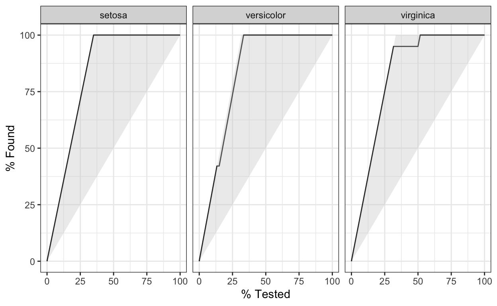
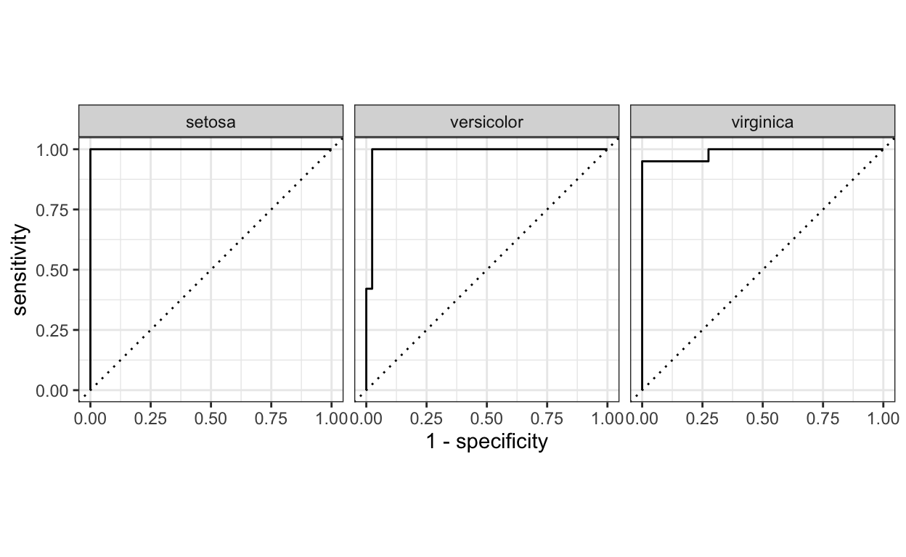

Edgar Ruiz’ eenvoudige introductie op machine learning met de inzet van het pakket tidymodels.
Ik heb me voorgenomen om wat machine learning te leren. Het komt mij allemaal nog wat onbekend voor. Door soms tutorials van anderen over te zetten en te kijken wat er gebeurt, wil ik hierin verder komen. Edgar Ruiz schreef een korte inleiding en zijn tutorial heb ik, brutaal als ik ben, naar het Nederlands overgezet. Edgar Ruiz, ik hoop dat je dit goed vindt. Onderaan vermeld ik waar de lezer jouw oorspronkelijke tutorial kan vinden.
tidymodelsOnlangs had Edgar Ruiz de gelegenheid om tidymodels te laten zien in workshops en gesprekken. Omdat hij zichzelf meer ziet als gebruiker dan ontwikkelaar, zou het wel eens waardevol en interessant kunnen zijn, zo dacht hij, om te delen wat hij tot nu toe had geleerd. Laten we eerst eens bekijken wat tidymodels in onze analyseprojecten kan betekenen, dat was het doel van zijn korte en duidelijke introductie tidymodels.
Het figuur hierboven is gebaseerd op een figuur uit R voor Data Science boek, het boek van Wickham en Grolemund en wordt heel vaak gebruikt. Alleen wordt hier het onderdeel modeleren met tidymodels uitgevoerd en dat is nieuw. In de introductie laat hij zien welke stappen hier gezet moeten worden. Modeleren kan baat hebben bij een ‘nette’ interface, dat is waar tidymodels een rol speelt.
Het is belangrijk om te verduidelijken dat de groep van pakketten die deel uitmaken van tidymodels niet zelf statistische modellen implementeren. In plaats daarvan richten ze zich vooral op het makkelijker maken van alle taken die te maken hebben met modeleren. Deze taken omvatten het voorbewerken van gegevens tot en met het valideren van resultaten.
In zekere zin kent het modeleren enkele substappen. Voor deze substappen levert tidymodels één of meerdere pakketten. Dit artikel toont functies uit vier tidymodels pakketten, die alle vier in de suite tidymodels zijn opgesloten:
rsample - Verschillende types van re-samples recipes - Transformaties om data voor te bewerken voor modeleren parnip - Een algemene interface voor modelcreatie yardstick - Meten hoe het model het doet
Het volgend figuur illustrates elkw modelleerstapt, en laat de tidymodels pakketten zien die we in dit artikel zullen gebruiken:
In een bepaalde analyse kan al dan niet het tidyverse pakket worden gebruikt. Niet alle projecten hoeven te werken met tijdsvariabelen, dus het is niet altijd nodig om functies uit het hms pakket te gebruiken. Hetzelfde idee geldt voor tidymodels. Afhankelijk van wat voor soort modelering er gedaan gaat worden, zullen alleen functies uit sommige van de pakketten gebruikt worden.
We zullen de iris dataset hiervoor gebruiken. De data zijn al binnen gehaald en voldoende opgeschoond om direct te modeleren.
tidymodels bibliotheekDit is mogelijk het eerste artikel dat hij heeft geschreven waarbij hij slechts één pakket heeft aangeroepen via de bibliotheek(). Naast het laden van de kernpakketten voor het modelleren, laadt tidymodels, ook handig, een aantal tidyverse pakketten, waaronder dplyr en ggplot2. Gedurende deze oefening zullen we enkele functies uit die pakketten gebruiken, maar we hoeven ze dus niet expliciet in onze R-sessie te laden.
Deze eerstestap richt zich op het geschikt maken van data voor modellering. Daarbij wordt gebruik gemaakt van datatransformaties. Alle transformaties kunnen worden uitgevoerd met dplyr, of andere tidyverse pakketten Overweeg het gebruik van tidymodels pakketten wanneer dit deel zwaarder en complexer is.
De initial_split() functie is vooral gebouwd om de dataset op te splitsen in een trainings en test set. Standaard wordt 3/4 van de data voor training en de rest voor testen gebruikt. Dat kan aangepast worden door het prop functie te gebruiken. Dit genereert een rplit object, geen dataframe. De geprinte output laat het aantal rijen voor testen, trainen en het totaal zien.
<Analysis/Assess/Total>
<90/60/150>Om toegang te krijgen tot de observaties van de trainingsset, gebruik je de training() functie. Hetzelfde voor testset waar je toegang toe krijgt via testing().
Rows: 90
Columns: 5
$ Sepal.Length <dbl> 4.7, 5.4, 5.0, 4.4, 4.9, 4.8, 4.3, 5.8, 5.1, 5…
$ Sepal.Width <dbl> 3.2, 3.9, 3.4, 2.9, 3.1, 3.0, 3.0, 4.0, 3.8, 3…
$ Petal.Length <dbl> 1.3, 1.7, 1.5, 1.4, 1.5, 1.4, 1.1, 1.2, 1.5, 1…
$ Petal.Width <dbl> 0.2, 0.4, 0.2, 0.2, 0.1, 0.1, 0.1, 0.2, 0.3, 0…
$ Species <fct> setosa, setosa, setosa, setosa, setosa, setosa…Deze samplingfuncties zijn mogelijk met behulp van het rsample pakket, dat deel uitmaakt van tidymodels.
In tidymodels biedt het recipes pakket een interface dat gespecialiseerd is in het voorbewerken van gegevens. Binnen het pakket worden de functies die de gegevenstransformaties starten, of uitvoeren, vernoemd naar kookacties. Dat maakt de interface gebruiksvriendelijker. Bijvoorbeeld:
recipe() - start een nieuwe set van toe te passen transformaties, vergelijkbaar met het ggplot() commando. Het belangrijkste argument is de formule van het model.
prep() - Voert de transformaties uit bovenop de geleverde gegevens (meestal de trainingsgegevens).
Elke datatransformatie is een stap. Functies komen overeen met specifieke soorten stappen, die elk een voorvoegsel van step_ hebben. Er zijn verschillende step_ functies; in dit voorbeeld gebruiken we er drie:
step_corr() - Verwijdert variabelen die sterk correleren met andere variabelen
step_center() - Normaliseert numerieke data die een gemiddelde van nul krijgen
step_scale() - Normaliseert numerieke data die een standard deviatie van één krijgen
Een ander aardig kenmerk van deze step is dat deze kan worden toegepast op een specifieke variabele, groepen variabelen of alle variabelen. De all_outocomes() en all_predictors() functie bieden een hele prettige manier om specifieke groepen variabelen te specificeren. Bijvoorbeeld, als we de step_corr() willen gebruiken om alleen de predictorvariabelen te analyseren, gebruiken we step_corr(all_predictors()). Zo hoeven we niet elke variabele op te sommen.
In het volgende voorbeeld, brengen we de recipe(), prep() en step-functies om een recipe object te creëren. De training() functie wordt gebruikt om de dataset uit de eerder aangemaakte gesplitste dataset te halen.
Als we het iris_recipe object oproepen, zal het details hierover afdrukken. De Operations sectie beschrijft wat er met de gegevens is gedaan. Een van de bewerkingen in het voorbeeld legt uit dat de correlatiestap de Petal.Length variabele heeft verwijderd.
Data Recipe
Inputs:
role #variables
outcome 1
predictor 4
Training data contained 90 data points and no missing data.
Operations:
Correlation filter removed Petal.Length [trained]
Centering for Sepal.Length, ... [trained]
Scaling for Sepal.Length, ... [trained]De testgegevens kunnen nu worden getransformeerd met behulp van precies dezelfde stappen, gewichten en categorisatie als bij de voorbewerking van de trainingsgegevens. Hiervoor wordt een andere functie met een kookterm gebruikt: bake(). Merk op dat de functie testing() wordt gebruikt om de juiste dataset te extraheren.
The testing data can now be transformed using the exact same steps, weights, and categorization used to pre-process the training data. To do this, another function with a cooking term is used: bake(). Notice that the testing() function is used in order to extract the appropriate data set.
Rows: 60
Columns: 4
$ Sepal.Length <dbl> -0.9090229, -1.1427716, -1.4933947, -1.0258972…
$ Sepal.Width <dbl> 1.0457854, -0.1076544, 0.1230336, 1.2764734, 0…
$ Petal.Width <dbl> -1.3566929, -1.3566929, -1.3566929, -1.3566929…
$ Species <fct> setosa, setosa, setosa, setosa, setosa, setosa…Het uitvoeren van dezelfde operatie over de trainingsgegevens is overbodig, omdat die gegevens al zijn voorgeprogrammeerd. Om de voorbereide trainingsgegevens in een variabele te laden, gebruiken we juice(). Het zal de gegevens uit het iris_recipe object halen.
Rows: 90
Columns: 4
$ Sepal.Length <dbl> -1.37652034, -0.55839976, -1.02589723, -1.7271…
$ Sepal.Width <dbl> 0.3537215, 1.9685372, 0.8150974, -0.3383423, 0…
$ Petal.Width <dbl> -1.3566929, -1.0918288, -1.3566929, -1.3566929…
$ Species <fct> setosa, setosa, setosa, setosa, setosa, setosa…In R zijn er meerdere pakketten die op hetzelfde type model passen. Het is gebruikelijk dat elk pakket een unieke interface biedt. Met andere woorden, zaken als een argument voor hetzelfde modelattribuut wordt voor elk pakket anders gedefinieerd. Bijvoorbeeld, de ranger en randomForest-pakketten passen bij Random Forest-modellen. In de ranger() functie gebruiken we num.trees om het aantal bomen te definiëren. In randomForest wordt dat argument dan weer ntree genoemd. Het is niet gemakkelijk om te wisselen tussen pakketten om hetzelfde model te draaien.
In plaats van het modelleerpakket te vervangen, vervangt tidymodels de interface. Beter gezegd, tidymodels biedt een enkele set functies en argumenten om een model te definiëren. Een specifiek pakket wordt dan aangepast in het model en algemeen gemaakt.
In het onderstaande voorbeeld wordt de rand_forest() functie gebruikt om een Random Forest model te initialiseren. Om het aantal bomen te definiëren wordt het treesargument gebruikt. Om de ranger versie van Random Forest te gebruiken, wordt de set_engine() functie gebruikt. Tenslotte wordt de fit() functie gebruikt om het model uit te voeren. De verwachte argumenten zijn de formule en de gegevens. Merk op dat het model boven op de gesausde getrainde gegevens draait.
Als we nu hetzelfde model niet met ranger maar met randomForest willen draaien, hoeven we alleen maar de waarde in set_engine() te veranderen in randomForest.
Het is ook het vermelden waard dat het model niet in een enkele, grote functie met veel argumenten is gedefinieerd. De definitie van het model is gescheiden in kleinere functies zoals fit() en set_engine(). zo krijgen we een flexibelere - en gemakkelijker te leren - interface.
In plaats van een vector geeft de predictfunctie tibble terug. Standaard wordt de voorspellingsvariabele .pred_class genoemd. Merk op dat in het voorbeeld de ’kook’testgegevens worden gebruikt.
# A tibble: 60 x 1
.pred_class
<fct>
1 setosa
2 setosa
3 setosa
4 setosa
5 setosa
6 setosa
7 setosa
8 setosa
9 setosa
10 setosa
# … with 50 more rowsHet is eenvoudig om de voorspellingen toe te voegen aan de ’kook’testgegevens door gebruik te maken van dplyr’s bind_cols() functie.
Rows: 60
Columns: 5
$ .pred_class <fct> setosa, setosa, setosa, setosa, setosa, setosa…
$ Sepal.Length <dbl> -0.9090229, -1.1427716, -1.4933947, -1.0258972…
$ Sepal.Width <dbl> 1.0457854, -0.1076544, 0.1230336, 1.2764734, 0…
$ Petal.Width <dbl> -1.3566929, -1.3566929, -1.3566929, -1.3566929…
$ Species <fct> setosa, setosa, setosa, setosa, setosa, setosa…Gebruik de metrics() functie om de prestaties van het model te meten. Het zal automatisch metrieken kiezen die geschikt zijn voor een bepaald type model. De functie verwacht een tibble dat de werkelijke resultaten bevat (waarheid) en wat het model heeft voorspeld (schatting).
# A tibble: 2 x 3
.metric .estimator .estimate
<chr> <chr> <dbl>
1 accuracy multiclass 0.983
2 kap multiclass 0.975Door de consistentie van de nieuwe interface is het meten van de resultaten voor het randomForest-model eenvoudig omdat je alleen maar de modelvariabele aan de bovenkant van de code hoeft te vervangen (nu iris_rf ipv iris_ranger.
# A tibble: 2 x 3
.metric .estimator .estimate
<chr> <chr> <dbl>
1 accuracy multiclass 0.983
2 kap multiclass 0.975Het is eenvoudig om de waarschijnlijkheid voor elke mogelijke voorspelde waarde te verkrijgen door het type-argument op prob te zetten. Dat levert een tibble op met zoveel mogelijk variabelen als er mogelijke voorspelde waarden zijn. Hun naam zal standaard op de oorspronkelijke waarde worden gezet, voorafgegaan door .pred_.
Rows: 60
Columns: 7
$ .pred_setosa <dbl> 0.99800000, 0.90737302, 0.97193651, 0.9780…
$ .pred_versicolor <dbl> 0.000000000, 0.062146825, 0.006666667, 0.0…
$ .pred_virginica <dbl> 0.002000000, 0.030480159, 0.021396825, 0.0…
$ Sepal.Length <dbl> -0.9090229, -1.1427716, -1.4933947, -1.025…
$ Sepal.Width <dbl> 1.0457854, -0.1076544, 0.1230336, 1.276473…
$ Petal.Width <dbl> -1.3566929, -1.3566929, -1.3566929, -1.356…
$ Species <fct> setosa, setosa, setosa, setosa, setosa, se…Ook hier, gebruik bind_cols() om de voorspellingen toe te voegen aan de test dataset die je hiervoor hebt voorbereid.
Rows: 148
Columns: 5
$ .level <chr> "setosa", "setosa", "setosa", "setosa", "se…
$ .n <dbl> 0, 2, 3, 6, 7, 8, 10, 11, 12, 13, 14, 15, 1…
$ .n_events <dbl> 0, 2, 3, 6, 7, 8, 10, 11, 12, 13, 14, 15, 1…
$ .percent_tested <dbl> 0.000000, 3.333333, 5.000000, 10.000000, 11…
$ .percent_found <dbl> 0.00000, 9.52381, 14.28571, 28.57143, 33.33…Nu alles in een tibble zit, is het eenvoudig om curve-methoden te berekenen. In dit geval gebruiken we de gain_curve().

In de curve-methoden zit ook een autoplot() functie dat makkelijk kan worden omgezet naar een ggplot2 visualizatie.

Dit is een voorbeeld van een roc_curve(). Nogmaals, vanwege de consistentie van de interface, hoeft maar een functienaam te worden omgezet; zelfs de argument waarden blijven hetzelfde.
Om de gecombineerde enkelvoudige voorspelde waarde en de waarschijnlijkheid van elke mogelijke waarde te meten, combineer je de twee voorspellingsmodi (met en zonder prop type). In dit voorbeeld is met het gebruik van dplyr’s select() de resulterende tibble makkelijker af te lezen.
Rows: 60
Columns: 5
$ .pred_setosa <dbl> 0.99800000, 0.90737302, 0.97193651, 0.9780…
$ .pred_versicolor <dbl> 0.000000000, 0.062146825, 0.006666667, 0.0…
$ .pred_virginica <dbl> 0.002000000, 0.030480159, 0.021396825, 0.0…
$ .pred_class <fct> setosa, setosa, setosa, setosa, setosa, se…
$ Species <fct> setosa, setosa, setosa, setosa, setosa, se…Pipe de resultatentabel in metrics(). In dit geval, specificeer de .pred_class als de schatting.
# A tibble: 4 x 3
.metric .estimator .estimate
<chr> <chr> <dbl>
1 accuracy multiclass 0.983
2 kap multiclass 0.975
3 mn_log_loss multiclass 0.167
4 roc_auc hand_till 0.990Dit voorbeeld is bedoeld als een hele voorzichtige kennismaking met tidymodels. Het aantal functies en de mogelijkheden van dergelijke functies zijn voor deze demonstratie tot een minimum beperkt, maar er kan nog veel meer worden gedaan met deze prachtige suite van pakketten. Hopelijk helpt dit artikel jou op weg en moedigt het u misschien zelfs aan om uw kennis verder uit te breiden.
Edgar Ruiz wil graag Max Kuhn en Davis Vaughan, de ontwikkelaars van tidymodels, bedanken. Ze waren hem genadig in het geven van instructie, feedback en begeleiding tijdens zijn reis om tidymodels te leren.
Voor mij was dit inderdaad een van de eerste kennismakingen met tidymodels. Ik kende het pakket caret en ook het mlr. tidymodels is een modernisering van deze eerste interfaces en moet net zo’n RStudio succes worden als tidyverse. Ondertussen het ik de website van tidymodels gelezen, de interactieve cursus van Julia Silge en de introducties van Alison Hill. Ook het nieuwe boek van Max Kuhn en Julia Silge ben ik op dit moment aan het lezen. Hieronder vind je die literatuur die ik op dit moment wat bij elkaar aan het zoeken ben. Voor mij is er nog een lange weg te gaan maar het artikel van Edgar Ruiz was voor mij een eerste uitstapje. Ik wil hem hartelijk dank voor zijn uitnodiging.
Edgar Ruiz (A Gentle introduction to tidymodels)[https://rviews.rstudio.com/2019/06/19/a-gentle-intro-to-tidymodels/]
Tidymodels (website)[https://www.tidymodels.org/]
Hefin Rhys (Machine learning with R)[https://education.rstudio.com/blog/2020/02/conf20-intro-ml/]
Julia Silge (Supervised learning course)[https://juliasilge.com/blog/supervised-ml-course/]
Max Kuhn and Julia Silge (Tidy modeling with R)[https://www.tmwr.org/]
Alison Hill (Introduction to machine learning)[https://education.rstudio.com/blog/2020/02/conf20-intro-ml/]
Rebecca Barter (Tidymodels: tidy machine learning in R)[http://www.rebeccabarter.com/blog/2020-03-25_machine_learning/]